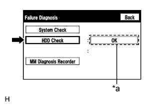

СИСТЕМА НАВИГАЦИИ (для моделей с жестким диском) > Не рассчитывается маршрут |
| 1.ПРОВЕРЬТЕ ЖЕСТКИЙ ДИСК (ПРОВЕРКА РАБОТЫ) |
|  |
Перейдите в режим "Failure Diagnosis" (диагностика неисправностей) (Нажмите здесь).
Выберите "HDD Check" (проверка жесткого диска) и проверьте результат.
| *a | Результат |
|
| ||||
| OK | |
| 2.ПРОВЕРЬТЕ САЛОН |
Убедитесь в отсутствии конденсата и высокой или чрезмерно низкой температуры внутри салона.
|
| ||||
| OK | |
| 3.ЗАДАЙТЕ ПУНКТ НАЗНАЧЕНИЯ |
Задайте другой пункт назначения и проверьте, может ли система правильно рассчитать маршрут.
|
| ||||
| OK | ||
| ||